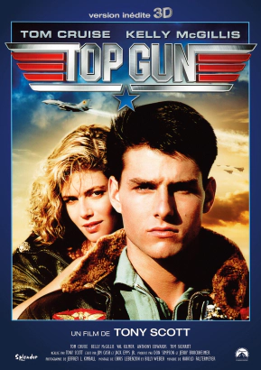
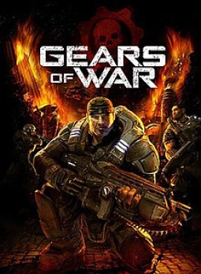

Vous devez sûrement connaître la franchise « Top Gun »,
2 films superbes qui parlent avant tout d’aviation,
on se retrouve plongé dans une école de combat aérien de la marine américaine.
Vous ne connaissez pas Top Gun ? Cet article est fait pour vous !

Top Gun, c'est quoi ?
Quand on prononce juste ses deux mots cela résume tout un sens,
tout un regard pour les films d’action, car oui c’est un film d’action avec beaucoup d’effets spéciaux et de scène/plan à couper le souffle qui a marqué le cinéma.
Il existe pour l’instant 2 films pour cette franchise, Top Gun sorti en 1986 est celui qui a propulsé la carrière au cinéma de l’acteur principale Tom Cruise. Mais aussi,
Top Gun Maverick la suite du premier de 1986 sorti récemment en 2022, il est sans doute encore disponible dans le cinéma le plus proche de chez vous à l’heure où vous lisez ses lignes.

Jaquette du film de 1986
1986
Voici un petit résumé du film de 1986. (spoiler alert)
"L'histoire se passe à la fin des années 1980, durant les dernières années de la guerre froide.
Pendant une patrouille aérienne de routine, deux chasseurs rencontrent deux autres avions considérés comme hostiles par leur hiérarchie. Mais tout ne va pas se passer comme prévu."
Pour vous préserver, nous n'allons pas dévoiler la suite.
Cependant, si l'envie vous prend de connaître le film en intégralité,
nous vous invitons à regarder Top Gun (1986) !

Jaquette du film de 2022
2022
Toujours pas convaincu ? He bien voici un résumé de la suite sorti en 2022. (spoiler alert)
« Le pilote de chasse et capitaine de vaisseau « Maverick » est de retour.
(déjà présent en 1986) après 30 ans de service,
il se retrouve pilote d’essai pour tester un nouveau prototype d’avion supersonique.
Celui-ci pouvant dépasser la vitesse Mach 11 (autrement dit 11 fois la vitesse du son)
mais encore une fois un problème va venir se confronter au pilote. Va-t-il réussir ?»
Encore une fois pour la suite il faudra vous rendre dans un cinéma.
Nous ne voulons pas être responsable d’un « spoil de masse ».
Les réalisateurs de Top Gun & Top Gun Maverick
En savoir plus sur le réalisateur,
A l’origine, les deux films Top Gun n’ont pas été réaliser par le même le réalisateur :
Tony Scott, pour celui de 1986 et Joseph Kosinski pour celui sorti en 2022.
Tony Scott malheureusement décédé nous allons plus tôt vous présenter Joseph Kosinki sans pour autant blâmer les mérites de
celui-ci.
Joseph Kosinki né le 3 mai 1974 à Marshalltown dans l’Iowa.
C’est un réalisateur reconnu dans le domaine de l’infographie et l’imagerie générée par ordinateur.
Il fait ses débuts sur grand écran avec le film de science-fiction « Disney Digital 3-D Tron : L’héritage. (suite du film de 1982 Tron).
Son œuvre précédente a été principalement constituée de publicités notamment : Starry Night, la bande d’annonce officiel de Halo 3 et Mad World, la bande d’annonce officiel de Gears of War.
Il réalise également Top Gun Maverick sorti en 2022.

Filmographie du réalisateur
Ci-dessous la filmographie de Joseph Kosinski
Longs métrages
- 2010 : Tron : L'Héritage
- 2013 : Oblivion
- 2017 : Line of Fire
- 2022 : Spiderhead
Court métrage
Publicités
- 2006 : Gears of War : Mad World
- 2006 : Halo 3 : Starry Night
- 2011 : Halo 4 : Awakening

Gears of War est un jeu vidéo créée par Epic Games, c'est un jeux vidéo de tir en 3nd personne (TPS)

Halo 3 est un jeu vidéo créée par Bungie Studios, c'est un jeux vidéo de tir a la 1ere personne (FPS)

Halo 4 est un jeu vidéo créée par 343 Industries, c'est un jeux viéo de tir a ma 1ere personne (FPS)(suite de Halo 3)
Pour plus d'informations :
Top Gun :
https://fr.wikipedia.org/wiki/Top_Gun_(film)
Top Gun Maverick :
https://fr.wikipedia.org/wiki/Top_Gun_:_Maverick